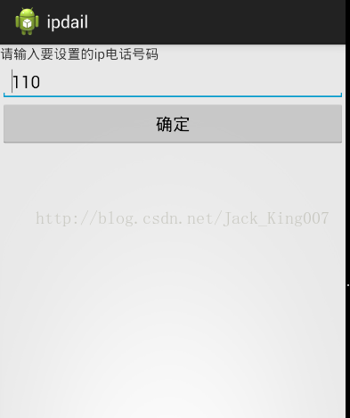

安卓四大组件的复习——实现IP拨号Demo
今天对于广播从新复习下~~~~~~~~~~~~~~·
第一点，我们为什么要用广播，方便了我们做什么事？
答案：
（1）如果没有广播 ，系统一开机，啥都没有，一个系统没有软件，就像吃饭没有菜一样，有了广播，一开机，系统就用广播大喊:"我要开机了",软件就会听到，启动，为用户准备好了一些常用的软件。
（2）方便我们开发，如果我们要开机启动，就可以监听系统开机广播。
第二点 谷歌为什么要将广播定义成四大组件？
答案：
作为安卓的四大组件，他有着重要的作用，让应用的关系更加得紧密了。
好啦，废话不多说就用一个demo 来讲解吧
界面是：

Demo需求：拨打电话的时候，自动加上一个IP号码
界面：Edittext 是用来输入 要 IP号码 Button是用来保存到SP中去
思路：先将IP号码用Sp缓存起来
代码实现： 主类获取Edittext的号码 并且用SP缓存起来 在activity启动的时候，获取sp中缓存的号码
然后新建一个广播 监听拨打电话的广播，获取其号码 在前段加上IP号码
package com.itheima.ipdail;
import android.app.Activity;
import android.content.SharedPreferences;
import android.content.SharedPreferences.Editor;
import android.os.Bundle;
import android.view.View;
import android.widget.EditText;
import android.widget.Toast;
public class MainActivity extends Activity {
private EditText et_ipnumber;
private SharedPreferences sp;
@Override
protected void onCreate(Bundle savedInstanceState) {
super.onCreate(savedInstanceState);
setContentView(R.layout.activity_main);
et_ipnumber = (EditText) findViewById(R.id.et_ipnumber);
sp = getSharedPreferences("config", MODE_PRIVATE);
et_ipnumber.setText(sp.getString("ipnumber", ""));
}
public void click(View view){
String ipnumber = et_ipnumber.getText().toString().trim();
Editor editor = sp.edit();
editor.putString("ipnumber", ipnumber);
editor.commit();
Toast.makeText(this, "设置完成", 0).show();
}
}
基本上代码没有难度，唯一有点难度的是 SP缓存了 sp是activity中内置的一个方法 可以直接通过 Context.getSharedPreferences
第一个参数是 文件名字，第二个参数是 保存模式 因为SP无法实现直接编辑 要通过一个借口edit（）； 得到一个Editor 才能进行编辑
到了 新建广播类了，首先遵循安卓的原则，四大组件都要在配置文件中注册
<!-- 定义了一个广播接受者 new出来了一个收音机 ,设置action 就相当于设置了监听的频道 --><receiver android:name=".OutCallReceiver" >
<intent-filter>
<action android:name="android.intent.action.NEW_OUTGOING_CALL" />
</intent-filter>
</receiver>
可以看出来 在配置文件中他的名字是receiver 后面的是要注册广播的名字，下一级节点是过滤器 指定动作是 拨打电话 android.intent.action.NEW_OUTGOING_CALL
因为我们要监听 拨打电话 所以要加上 权限
<uses-permission android:name="android.permission.PROCESS_OUTGOING_CALLS"/>
现在可以回到广播类中编辑代码了，
package com.itheima.ipdail;
import android.content.BroadcastReceiver;
import android.content.Context;
import android.content.Intent;
import android.content.SharedPreferences;
public class OutCallReceiver extends BroadcastReceiver {
//当有广播事件产生的时候 就会执行onrecevie方法
@Override
public void onReceive(Context context, Intent intent) {
System.out.println("onreceiver 发现了新的外拨电话...");
String number = getResultData();//外拨的电话号码
System.out.println("number="+number);
//替换掉这个号码
SharedPreferences sp = context.getSharedPreferences("config", Context.MODE_PRIVATE);
String ipnumber = sp.getString("ipnumber", "");
String newnumber = ipnumber+number;
//设置外拨的电话号码
setResultData(newnumber);
//不会生效的 广播终止不了 显示的指定了接受者
// abortBroadcast();
}
}